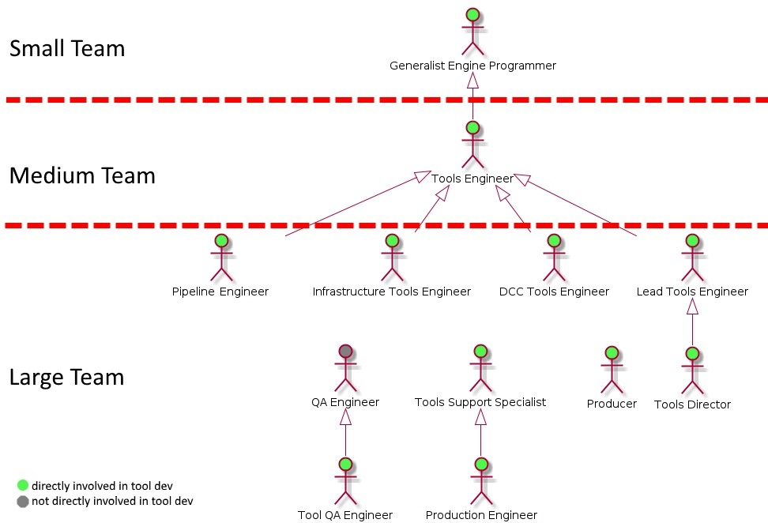

Roles in Game Tools Development
Today in Game Development there are several roles that take part in creating new Game Tools and developing the existing ones. Depending on the number of people in a Game Development team multiple roles may be assigned to one responsible person. It would be challenging if not impossible to find a studio/company that has a dedicated person assigned to each of the roles listed. In this post, I will list the main roles and give them a short definition.
Game Tools Engineering
The roles involved in creating and maintaining the internal implementations of in-house digital content creation (DCC) tools, the content build pipeline, and the studio infrastructure. Usually, the work that these roles do doesn’t leave the studio’s walls.

Generalist Engine Programmer - in a small team setting the Generalist Engine Programmer knows the engine best and this is the best person to know how to integrate DCC tools and set up the pipeline.
Tools Engineer - dedicated engineering role responsible for maintaining the tools and pipelines that the game development team uses.
Pipeline Engineer - responsible for maintaining/evolving the tools and technologies part of the content development pipeline. Collaborating with Technical Artists to create the user-facing parts of the pipeline.
Infrastructure Tools Engineer - responsible for maintaining/evolving studio services part of Continuous Integration, database health, Version Control and workstation configuration.
DCC Tools Engineer - responsible for maintaining/evolving the Game Engine Toolset. Working with Content Creators, Tech Artists, Tech Designers, and the Tool UX team to create the most optimal workflows possible.
Tools Support Specialist / Production Engineer - first-line support for tool/pipeline user issues. Knowledge base of known issues, best practises and issue workarounds. The firefighter of game development.
Technical Art
The part of the Game Development Team that bridges the gap between Engineering and Art.
Technical Artist - Responsible for tackling technical challenges that an art team can come across. Enables the artists to focus on creating art and not solving technical problems. Use great communication skills to bridge the gap between engineering and art.
VFX Technical Artist - Technical artist that focuses on helping the VFX team with VFX tools and workflows. Masters of real-time effects, lighting, and shaders. Coordinates with the Tools User Experience team to provide the best experience possible. Provides feedback to the Render Team.
Pipeline Technical Artist - Works on streamlining the content build pipeline and workflows within the pipeline. Closely coordinates with the Tools Team to set up efficient asset creation processes.
Technical Animator - Tech Artist that specializes in development and support of rigging and animation technologies. Closely works with the Tools User Experience team to improve workflows and efficiency.
Technical Design
The part of the Game Development Team that bridges the gap between Engineering and Design.
Tech Designer - the tech-savvy designer that helps bridge the gap between design and code. Help define pipelines and workflows for developing game mechanic related content. Talor tool feature request to better suit the non-technical designers.
Tech UI/UX Designer - Technical Designer that focuses on helping the UI team tackle technical problems of creating menus, navigation, and HUD.
Tech Audio Designer - Technical Designer that is focused on helping the audio team maintain and develop the audio system of the game engine. Coordinates with the Tools User Experience team to provide the best experience in the audio tools.
Tech Level Designer - work closely with the Level Design, Tools and Tools UX Teams to create a sublime level editing experience in the engine level editor.
Game Tools UI/UX and Design
The part of the Tools Team that make the Engineers/ Tech Designers/Tech Artists more efficient, the Artist/Designers happier and budget have fewer drains.
Tools Designer - Helping the Tools Team concentrate on the engineering side of the tools and pipeline. Spending time at users desks analyzing workflows and pointing out the “best bang for the buck” improvements to the Tools Engineers, Tech Designers, and Tech Artists.
User Experience Designer - create and design UI/Workflows for in-house tools. Collaborate with Users and Tech Artists/Tech Designers/Tools Engineers to make the best UX possible.
User Researcher - design and conduct research studies on experience and workflow for in-house tools. Outline, communicate research results and provide recommendations.
Tools UI Designer - responsibilities include: work on the design of Tool UIs; Maintain the Tools UI style guide; Verify that the style guide is properly implemented;
Tech Writer - the keeper of the studios knowledge base. Enabling quick new hire ramp ups.
Data Analytics Engineer / Tools Analytics - responsible for setting up Tool statistic gathering and statistical data analysis of tool usage. Coordinates with User Researcher to understand the reasons behind the user’s behaviors and actions.
Ad-hoc Tool Development
There is always a lot of work to go around when it comes to tools. When there aren’t enough resources in the Tools/Tech Design/Tech Art Teams other programmers come to help.
Summary
This turned out a bit of a laundry list. Anyway, this is a good high-level overview of the game development roles that are involved in creating tools for building amazing interactive experiences. I believe this could be an excellent reference for people that are just starting out in the industry.
Links
- Tools Engineer Recruiting FAQ
- Polycount wiki - Technical Art
- GDC 2015: Tools Development at Ubisoft: Building a Shared Vision to Improve the User Experience
- The Problem With Ad-Hoc Tools Teams
- Best of Comments: Ad-hoc and GDC
- GDC 2010: How to Train your Technical Artist
- What is a technical game designer?
P.S.
If you have a better definition to any of the above or you think I missed a role. Please feel free to DM me on twitter or leave a commnet here.